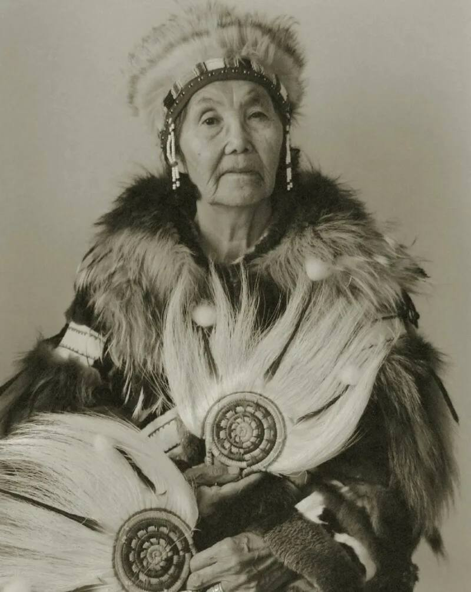
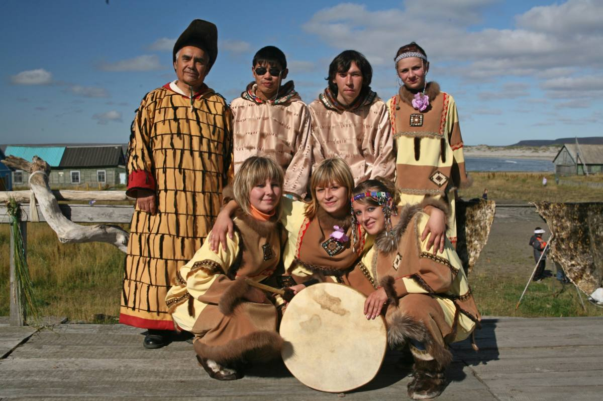

Религия
| Главная | История | Язык | Культура | Традиции | Религия | Об авторе | Источники | |
|
 Текст 1
 Текст 2 |
Для традиционных верований алеутов характерен анимизм — вера в существование добрых и злых духов, управляющих природными явлениями и влияющих на жизнь человека. Некоторые особенности: Почитали духов-хозяев земли, воды, различных животных, а также духов-предков и семейных духов-покровителей. Была распространена охотничья магия: обряды вызывания зверя, особые охотничьи запреты, ношение амулетов, охраняющих владельца и приносящих удачу в охоте. Посредником между человеком и духами служил шаман, в чьи функции входило лечение людей, помощь в охоте. |